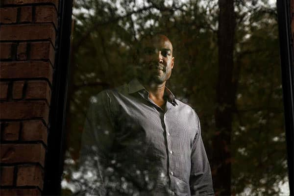

Cowboys Gameday: Week 8
Eagles at Cowboys
7:30 p.m. Sunday TV: Ch. 5
Radio: KRLD-FM (105.3), KMVK-FM (107.5, Spanish)
Line: Cowboys by 4½
A win would mean ...
The Cowboys own at least a two-game lead in the NFC East. A sixth straight victory with Dak Prescott leading the way only adds to the intrigue as veteran Tony Romo gets closer to returning.
A loss would mean ...
Both teams are 5-2, but the Eagles own the head-to-head win and the Cowboys are stuck with two division defeats. Eagles continue to thrive at AT&T Stadium, which they enter with a 5-2 record.
Advertisement
SportsDay’s Picks

The Eagles’ strength is their defense, but Cowboys Insiders Brandon George and Kate Hairopoulos think it won’t be enough to stop Cowboys running back Ezekiel Elliott (left) from having another 100-yard rushing game. (Louis DeLuca/Staff Photographer)

Brandon George: The Cowboys have a lot of respect for the Eagles’ defensive line. They’ve talked up their front four all week. On Sunday, however, look for the Cowboys to run over and around the Eagles’ defensive front. No team has figured out how to slow down rookie running back Ezekiel Elliott since Week 1. That should continue against the Eagles’ defense, which should be overmatched by the Cowboys’ vaunted offensive line. Elliott will top 100 rushing yards for a fifth straight game to give the Cowboys a sixth consecutive victory as they take full control of the NFC East. Cowboys, 27-20

Kate Hairopoulos: Philadelphia is strutting into AT&T Stadium after beating previously undefeated Minnesota. But the victory overshadowed the Eagles' two-game losing streak that preceded it, including a 27-20 loss at Washington in which Matt Jones rushed for 135 yards and the Redskins totaled 230 yards on the ground. The Eagles’ strength is their defense, but they clearly have weaknesses, and they are not going to stop Cowboys running back Ezekiel Elliott from another 100-yard game. Philadelphia will force a couple of turnovers that will keep it close. But the Cowboys will do enough, thanks to Zeke and kicker Dan Bailey, to win their sixth in a row. Cowboys 24-21

Jon Machota: Jim Schwartz and Scott Linehan are very familiar with each other. Linehan was offensive coordinator in Detroit when Schwartz was the head coach from 2009 until 2013. Although the Lions went 29-51 during those five seasons, there’s no doubting that those two can coach. Schwartz is now leading a top 5 defense in Philadelphia. Linehan is calling the shots for one of the NFL’s top offenses. Schwartz has a talented group led by linemen Fletcher Cox and Brandon Graham. But Ezekiel Elliott continues getting better by the week, and Dez Bryant is returning to the lineup. Give me Linehan and his offensive weapons Sunday night. Cowboys 28-21

David Moore: Some will cast Sunday night’s game as a referendum on Dak Prescott vs. Carson Wentz. But let’s not reduce this game to a mere quarterback duel. And let’s not overlook the fact that a package deal is in place for Dallas. Yes, Wentz was the top-rated quarterback on the Cowboys’ board. He’s the only QB they would have considered taking at No. 4. But let’s say the Eagles passed on Wentz and the Cowboys sat at No. 4 with the chance to take either Wentz or Ezekiel Elliott. Whatever the choice, the Cowboys would have come away with only one player. Instead, the Cowboys came away with Elliott and Prescott. That’s a combination Philadelphia can’t beat. Cowboys 27-17

Tim Cowlishaw: Cowboys prove that starting rookie quarterbacks and having proximity in the standings do not mean these teams are that close to being equal. Cowboys, 31-10

Rick Gosselin: Suddenly the Cowboys have a home field advantage again. It took a rookie quarterback to give it to them. Cowboys 26-23

Barry Horn: The Dak run can't go on forever. Can it? Then again, these Eagles are ripe to be plucked. Cleveland, yes Cleveland, ends the Dak run next week. Cowboys, 31-20

Kevin Sherrington: Dak wins the duel of the rookie QBs, and Romo loses.Cowboys, 27-21
You make the call
We want to know who you who think will win this week’s Cowboys game. Enter your score below, and see which team other readers think will take home the “W.” Scores plotted on the lower-right of the chart indicate a predicted Cowboys victory, upper-left indicate a predicted opponent victory. (Note: Only scores below 60 will be shown.)
Who do you think will win? Enter the scores for each team, then click the "submit" button.
Thank you for your submission
You picked the to win, . Share your prediction on social media:
of readers are picking the to win this week by an average of points.
Cowboys:
:
Times predicted:
Advertisement
Bob Sturm’s scouting report
SituationEdgeIn the know
When the Cowboys run the ball
Edge
The Eagles have gone through many massive changes since the last time these teams met, including a sudden change in direction of their defensive scheme to the 4-3 of coordinator Jim Schwartz. The Cowboys just destroyed the No. 1 rushing defense at Green Bay, and the Eagles are 24th in yards per carry allowed. At this point, the Cowboys will be given the edge every week until someone slows them down.
When the Cowboys pass the ball
EdgeThe tradeoff for allowing a few more yards inside against the run is that the Eagles are focused on slowing down passing games by getting consistent pressure from many different places. They will bring blitzes that complement strong rushers like Fletcher Cox, Brandon Graham and Connor Barwin. Dez Bryant returning should make the Cowboys more dynamic down field, but this is where a stout Eagles defense excels.
When the Eagles run the ball
Edge
The Eagles are a feeble running team with below league-average numbers across the board and no back that threatens with a workload. Dallas has held four of its last five opponents below 100 yards, although the Cowboys have been ahead, which has chased teams from running the ball. Teams should be able to run on Dallas, but it is difficult to say that Philadelphia will be that team.
When the Eagles pass the ball
EdgeThe Eagles have plenty of work to do to rebuild an offense that lacks dynamic skill position threats and an offensive line that can look mediocre. WR Dorial Green-Beckham was a chance worth taking, and their tight ends always seem to get free against the Cowboys. Dallas has been playing dime, conceding pass rush to beef up coverage. It will be interesting to see what Rod Marinelli does against rookie Carson Wentz after frustrating Aaron Rodgers.
Special teams
EdgeIf one thing stays the same every year, it is the Eagles’ ability to generate points from special teams. They have two kickoff returns for touchdowns in the last two weeks.
Intangibles
Edge
The Cowboys continue to dominate with their offensive line. At this point, it is tough to see the Eagles producing enough points to win unless the Cowboys fall into a bad giveaway night.
Bob Sturm’s spotlight
Mississippi State has given the NFL plenty of talent over the years, and this generation certainly will boast defensive studs like Seattle’s KJ Wright, Detroit’s Darius Slay, Washington’s Preston Smith and Chicago’s Pernell McPhee. But there is little question that the two stories that make that fan-base proud will be squaring off Sunday when Fletcher Cox tries to chase down Cowboys quarterback Dak Prescott.
They crossed paths as Cox was finishing up his decorated career in Starkville and Prescott was a redshirt freshman. Cox would land in Philadelphia as the Eagles traded up to grab him at No. 12 in the 2012 draft (the same year the Cowboys traded up to get cornerback Morris Claiborne).
Since then, Cox has used his amazing combination of power and quickness to become one of the most disruptive forces in the NFL. He can live in the offensive backfield with sacks and tackles for loss accumulating at a rapid pace. His work against this Dallas front rates up there with anyone in the league. He causes the massive interior of the Cowboys’ line a decent-sized headache with his tenacious motor and talent.
He recently signed a six-year deal for more than $102 million, a contract that only trails Von Miller and Ndamukong Suh on the defensive side of the ball. He has been guilty of a few poor penalties this season, but overall, he is the Eagles’ best player.
Sturm’s prediction: I expect Carson Wentz will be an exceptional player for years to come, but the Eagles have many holes on their roster around him. It will take time for GM Howie Roseman and coach Doug Pederson to clean up that mess. In the meantime, Dallas looks too tough on both sides of the ball. The offense should continue to roll against a strong defense. Cowboys, 27-17
Mitchell Leff/Getty Images
Advertisement
Top photo: G.J. McCarthy/Staff Photographer
Read more from The Dallas Morning News
Chasing 1,808
Track Ezekiel Elliott’s progress throughout the season as he makes a run at Eric Dickerson’s NFL rookie rushing record.

Trappings of legend
While Jerry Jones doesn’t live in the past, an exclusive look inside the Cowboys owner’s office is a journey through the franchise’s history.
Ringing endorsement
For 12 seasons with the Dallas Cowboys, Darren Woodson would routinely wreak havoc on Sundays, then onnect with his best friend on Tuesdays.